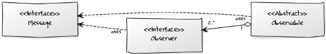
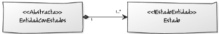
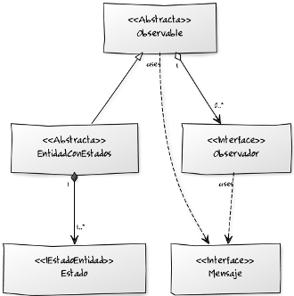
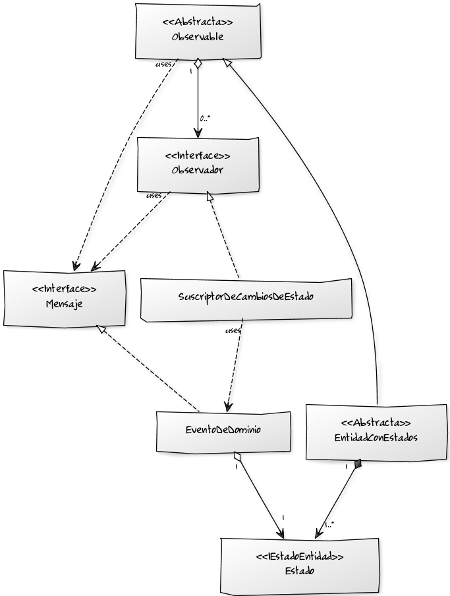
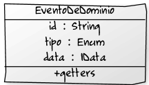
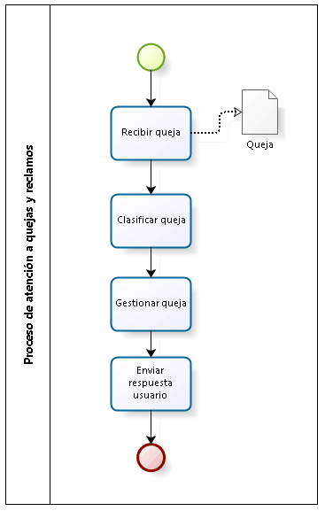
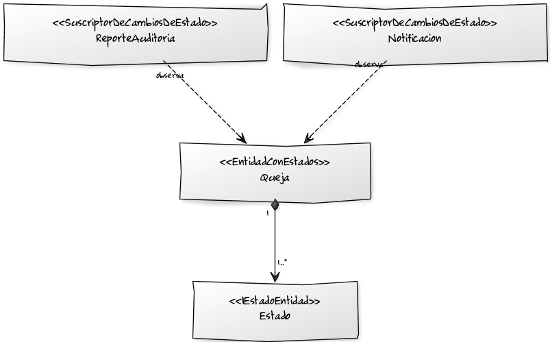

Durante los últimos años he participado en el diseño de aplicaciones que involucran procesos de negocio donde la estrella principal es una entidad en particular: una solicitud de préstamo, una solicitud de compra de un bien o un servicio, una queja o un reclamo, entre muchos otros.
No les ha pasado que cuando se enfrentan a este tipo proyectos ¿el comportamiento de negocio de la entidad estrella del proceso queda llena de invocaciones a envíos de correos electrónicos y llamados a sistemas externos que nada tienen que ver con las reglas de negocio que se requieren evaluar?
Es típico. Esa clase que hace de todo porque es la entidad central del proceso de negocio. Esa clase que nos hace pasar horas hurgándola y depurándola porque hace demasiado. Esa clase que llega a ser intocable y no permite que la aplicación evolucione.
Uno puede pensar que para evitar esto puede hacer delegados, fachadas, decoradores y demás, pero por más que ustedes aplican patrones y patrones, el código de la entidad estrella sigue plagada de código que no tiene que ver con el comportamiento del negocio sino que tiene más que ver con las consecuencias de las reglas de negocio.
En esta entrada presento un patrón que se me ocurrió para este tipo de proyectos evitando que el panorama se torne tan negro, permitiendoles asignar responsabilidades de manera rápida y segura, además de que les puede dar gratis procesamiento distribuido y gobierno de transacciones en sus aplicaciones empresariales.
Para facilitar la comprensión de esta esta entrada, publiqué un proyecto de ejemplo de este patrón y lo pueden encontrar acá.
Este es el resultado de la combinación de dos patrones de GoF: Observador y Estado. Le pusimos un nombre a modo de etiquetar la estrategia para resolver un tipo de problema recurrente en la construcción de aplicaciones empresariales que involucran procesos y tienen entidades estrella.
El siguiente es el diagrama de entidades que describe al patrón observador un poco matizado:

Es el típico patrón observador de GoF, solo que se hace énfasis en la estandarización del objeto de intercambio de mensajes que existe entre las entidades que observan y el sujeto observado. Además de estandarizar la comunicación entre el sujeto y los observadores, el mensaje nos permite agregarle versatilidad al patrón, como lo veremos más adelante.
Como muchos sabrán, el patrón observador también es conocido como el patrón de Publicación-Suscripción y nos será útil precisamente por eso, porque nos permitirá tener múltiples suscriptores a eventos generados por una sola entidad que publica eventos.
El patrón observador permite abstraer el concepto de dependencia que existe entre una entidad con otra. Lo más dulce del asunto es que la entidad que publica no es consciente de la funcionalidad de sus suscriptores u observadores, logrando así un alto nivel de desacoplamiento entre el comportamiento del sujeto y los suscriptores.
El siguiente es el diagrama del patrón Estado que utilizaremos para el de Estados Observados:

La gráfica describe una clase abstracta EntidadConEstados la cual modela las entidades que por definición del dominio tienen estados. Por ejemplo, una queja de un sistema de atención de quejas puede tener que pasar a un estado prioritario al pasar de cierto número de días. Cada uno de estos estados de la entidad será representado por clases que cumplan el contrato definido por la interface IEstadoEntidad.
Además de permitirnos modelar de una manera bastante directa una entidad con múltiples estados, el patrón nos permite modelar y encapsular el comportamiento especifico en cada uno de los estados posibles de la EntidadConEstados más el de cada una de las transiciones dadas entre estado y estado.
De esta manera, cada estado implementa un algoritmo distinto permitiéndole a la EntidadConEstados delegar la responsabilidad funcional de qué hacer en cada estado al objeto que modela el estado (es decir a las clases que cumplen con el contrato definido por IEstadoEntidad).
Hasta acá nada nuevo, nada especial. Solo un pequeño repaso de dos patrones de comportamiento de GoF que al combinarlos podríamos obtener un resultado interesante:

En el diagrama anterior vemos las mismas clases que veíamos en las gráficas anteriores solo que juntas. En la sección derecha está el patrón Observador y en la de la izquierda vemos el patrón Estados. Lo único que en este momento une a los patrones es que EntidadConEstados será una entidad observable.
Como se mencionó anteriormente, lo interesante por observar de una EntidadConEstados es precisamente sus estados y sus transiciones pues cada una representa un comportamiento fundamental del dominio.
Esta es una buena pista ya que las clases IEstadoEntidad contendrán el algoritmo requerido por el estado que representan y las consecuencias funcionales de que la EntidadConEstados haya pasado a ese estado podrán implementarse en las entidades suscritas u observadoras de la EntidadConEstados.
Si se detienen a pensar un poco el párrafo anterior, se darán cuenta que estas implicaciones y consecuencias no deben ser implementadas dentro del contexto semántico de la EntidadConEstados. A continuación explicamos porqué.
Un cambio de estado de una EntidadConEstados es un evento destacable del dominio del negocio. Al ser destacable ese cambio de estado tiene asociados múltiples requerimientos funcionales como enviar un correo electrónico a alguien, crear un registro en una bitácora, registrar el cambio de estado en un reporte, realizar un consumo de un servicio de sistema externo entre muchos otros. Estos requerimientos funcionales no hacen parte del dominio de la EntidadConEstados como tal, pues queda un poco incomodo dejar este tipo de algoritmos inmersos en las reglas de negocio implementadas en ella o en un IEstadoEntidad.
Lo que sí es muy cómodo es crear observadores de estos eventos y en ellos delegar la responsabilidad de realizar esas funciones que no tienen que ver con el comportamiento del negocio, lo cual sí es responsabilidad de la EntidadConEstados. Así, podríamos implementar el envío del correo electrónico en un observador especializado y que realice la notificación solo cuando a él le toque o le interese, evitando mezclar peras (comportamiento de negocio) con manzanas (requerimientos funcionales que no pertenecen al dominio de negocio).
Es necesario anotar que un observador debe estar suscrito a todos los cambios de estado, pero no necesariamente le deben interesar todos.
El siguiente diagrama presenta el diagrama del patrón Estados Observados un poco más completo para que soporte más funcionalidades:

En el diagrama anterior podemos identificar dos clases nuevas: EventoDeDominio y SuscriptorDeCambiosDeEstado. La primera implementa el contrato Mensaje, lo que implica que esta será el móvil que permitirá la comunicación entre la EntidadConEstados y sus observadores.
Una instancia de la clase EventoDeDominio contiene información útil para cualquier aplicación como la hora de su ocurrencia, su hora de notificación, origen, etc. La clase captura algo ocurrido (en tiempo pasado) en la EntidadConEstados y deberá contener todo lo que requieran los suscriptores.

Para que nuestro patrón funcione es necesario poder identificar fácilmente de qué evento se trata y así determinar si el evento le interesa o no comparándolo contra una lista de eventos identificados como interesantes para ellos. Para esto modelamos el atributo “tipo” que pertenece a un conjunto finito de elementos.
También es necesario tener todos los datos de negocio relevantes del evento para que los posibles suscriptores sean lo más autónomos posible y sus algoritmos puedan trabajar solo con los datos recibidos. Para transportar esta información dejamos un atributo “data”.
Como su nombre lo indica, la clase SuscriptorDeCambiosDeEstado está suscrita a todos los cambios de estado que la EntidadConEstados sufra debido a las reglas de negocio que la gobiernan y la manipulación que los usuarios finales de la aplicación realicen sobre ella a través de servicios o la capa de presentación.
Un SuscriptorDeCambiosDeEstado solo está interesado en algunos cambios de estado y para ello cuenta con una lista de eventos interesantes para él. Cada vez que le llegue un EventoDeDominio interesante el tendrá el algoritmo adecuado que trabaje sobre los datos recibidos del evento.
Si mapeamos este patrón a una aplicación distribuida, podemos hacer que un SuscriptorDeCambiosDeEstado no comparta necesariamente el mismo espacio de memoria que la EntidadConEstados pues el Mensaje puede propagarse a través de algún protocolo (HTTP por ejemplo) o a través de una cola a otro espacio de memoria de otra máquina, permitiéndonos tener procesamiento distribuido de mensajes gratis.
Una vez se ha entendido el mecanismo básico de comunicación entre las clases podemos entrar a ver el patrón en acción a través de un ejemplo.
Nuestro ejemplo está inspirado en la implementación de una aplicación BPM que hoy en día se encuentra en producción, en la cual se utilizó el patrón de Estados Observados con bastante éxito.
Vamos a tomar como ejemplo el proceso de quejas de una empresa de telefonía móvil en una versión muy simplificada:

Como es usual, hay unos detalles que mariposean alrededor del proceso de negocio:
METER EJEMPLO DE CONSUMO DE UN SERVICIO ASINCRONO
Bien podría uno acribillar el BPEL de <choices> e <invoke> y modelar absolutamente todo en el proceso sin separar responsabilidades ni detenerse a modelar el dominio con actitud de “Ahhhhhrrrrrggghhhh eso de todas maneras no lo voy a mantener yo, marranos…“; o bien podría usar el patrón de estados observados.
A continuación se presenta el diagrama que contiene el modelo de la entidad de negocio Queja como una EntidadConEstados y sus SuscriptorDeCambiosDeEstado:

En la gráfica se presentan tres SuscriptorDeCambiosDeEstado para la EntidadConEstados Queja, a saber: Notificación, ReporteAuditoría y QuejaPrioridadAlpha.
Como se explicó, los SuscriptorDeCambiosDeEstado están atentos a todos los EventoDeDominio que emite la EntidadConEstados. Al suscriptor Notificación solo le interesan aquellos que impliquen el envío de correos electrónicos, tal como el requerimiento de enviar notificación a la Unidad de Mercadeo para que le envíe un regalo al usuario cuando la queja adquiere clasificación 3.
Cuando Queja cambie a prioridad Alpha debido a que se cumple la regla de negocio, el suscriptor QuejaPrioridadAlpha tendrá la responsabilidad de ingresar la información de la Queja al reporte semanal de quejas.
El suscriptor ReporteAuditoría estará escuchando todos los cambios de la entidad Queja: el usuario que hizo el cambio, la hora en la que la hizo, la IP desde dónde realizó la modificación sobre la queja y qué modificación realizó. Si uno realiza una consulta por el ID de la queja sobre este reporte tendrá toda la información transaccional de la queja, información que como imaginarán es muy poderosa al tratar de capturar un error de la aplicación o la resolución particular de una queja.
Los anteriores son solo tres ejemplos de simplificación del desarrollo de este tipo de requerimientos gracias al patrón utilizado. La simplificación se evidencia principalmente por presentar una solución más fácil de mantener y de evolucionar.
Cualquier requerimiento nuevo consecuencia de una evaluación de reglas de negocio puede ser implementado rápidamente en un nuevo SuscriptorDeCambiosDeEstado. O por ejemplo, si se necesita agregar una nueva notificación por correo electrónico, lo único que se debe hacer es meter un nuevo evento interesante en la lista de eventos interesantes de Notificación.
Ahora, pueden también imaginarse que cada uno de estos SuscriptorDeCambiosDeEstado se encuentra desplegado en distintos servidores en varias particiones de red. La Queja cuando emite un evento ya no lo hace a través de memoria compartida sino que publica el evento como un mensaje a una cola JMS. Cada uno de los SuscriptorDeCambiosDeEstado es un MDB que está suscrito a esa cola. Al hacer ese sencillo cambio, ya distribuyeron su aplicación y aumentaron la disponibilidad de su aplicación pues la transacción que gobierna el cambio de estado de la Queja ya no gobierna las transacciones consecuentes de este cambio.
Un SuscriptorDeCambiosDeEstado puede también tener la lógica requerida para afectar un sistema externo como un CRM, un ERP o un sistema de gestión documental. De esta manera realiza integración de sus aplicaciones desde la definición misma de la entidad estrella, logrando crear el vínculo entre el dominio del negocio y sus necesidades de integración.
Una vez se tienen claros los requerimientos funcionales, el mayor reto al construir una aplicación empresarial crítica es lograr modelar el comportamiento del dominio del negocio en algoritmos y estructuras. El patrón que les acabo de explicar logra vincular de manera bastante práctica el comportamiento del dominio y las consecuencias esperadas de este comportamiento.
Este patrón permite separar de manera clara las reglas de negocio los requerimientos funcionales que no hacen parte del comportamiento del negocio. De hecho, al utilizarlo, se refuerza la noción de desacoplamiento dentro comportamiento de negocio mismo, permitiendo que su mantenimiento o su evolución se pueda realizar pensando en dos vistas independientes: comportamiento y consecuencia de comportamiento.
El patrón tiene una posibilidad muy poderosa: los observadores no necesariamente tienen que estar en el mismo espacio de memoria que la EntidadConEstados. Supongan que en vez de que el SuscriptorDeCambiosDeEstado tenga el algoritmo que mastica los datos, este envíe estos datos vía una cola a otro sistema para que haga con ellos lo que quiera. De esta manera el patrón nos regala procesamiento asíncrono de peticiones, permitiendo así soportar transacciones de larga duración de manera decente e inteligente con mucho gobierno.
Siendo un poco extremos, podríamos hacer que todos los suscriptores de los eventos se encuentren en distintos espacios de memoria (bien sea en otros servidores virtualizados u otras máquinas virtuales) logrando que todas las consecuencias de un cambio de estado sean procesadas de manera distribuida. Esto es alta disponibilidad y alta capacidad de escalamiento gratis.
Debido a que este patrón se me ocurrió para el proyecto de un cliente que tiene su base de código en Java, nuestra implementación fue realizada en ese lenguaje. Sería muy interesante poder tener tiempo de hacer una implementación en un lenguaje como Scala, particularmente por el hecho de estar utilizando el patrón Observador.
También sería interesante hacer una implementación con la librería Guava de Google la cual ofrece una nueva clase EventBus la cual permite suscribirse como escucha (listener en inglés) de eventos y enviar eventos.
Posiblemente un modelo con programación reactiva sea más adecuado para la implementación de los observadores. Para más información de cómo sería el modelo con programación reactiva la pueden encontrar acá.